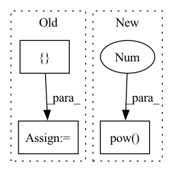

Pattern ID :21485
Before Change
df2 = type(df)()
for col in df.columns:
df2[col] = df[col].astype("float64").pow(2)
vals = {
"df-count": df.count().to_frame().transpose(),
"df-sum": df.sum().astype("float64").to_frame().transpose(),
"df2-sum": df2.sum().to_frame().transpose(),
}
// NOTE: Perhaps we should convert to pandas here
// (since we know the results should be small)?
del df2
return valsAfter Change
vals["count"][name] = [column.count()]
vals["sum"][name] = [column.sum().astype("float64")]
vals["squaredsum"][name] = [column.astype("float64").pow(2 ) .sum()]
// NOTE: Perhaps we should convert to pandas here
// (since we know the results should be small)?In pattern: SUPERPATTERN
Frequency: 3
Non-data size: 3
Instances Fragment ID: 68805897
Project Name: nvidia/nvtabular
Commit Name: 5c85dfdee22edd1cd70f0c657f228f51f83e128d
Time: 2021-10-25
Author: github@benfrederickson.com
File Name: nvtabular/ops/moments.py
M Class Name: AnonimousClass
N Class Name: AnonimousClass
M Method Name: _chunkwise_moments(1)
N Method Name: _chunkwise_moments(1)
M Parent Class:
N Parent Class:
M File Name: nvtabular/ops/moments.py
N File Name: nvtabular/ops/moments.py
M Start Line: 65
M End Line: 75
N Start Line: 67
N End Line: 75
Before Change
// compute value loss
if self.model.critic.num_critics == 1:
key = list(returns.keys())[0]
value_losses = { key: (returns[key] - critic_output.values[key]).pow(2).mean()}
else:
value_losses = {step_key: (returns[step_key] - values).pow(2).mean() for step_key, values in
critic_output.values.items()}
After Change
if self.model.critic.num_critics == 1:
value_losses = [(returns[0] - critic_output.values[0]).pow(2).mean()]
else:
value_losses = [(ret - val).pow(2 ) .mean() for ret, val in zip(returns, critic_output.values)]
// compute policy loss, iterating across all sub-steps
action_log_probs = self.model.policy.compute_action_log_probs(policy_output, record.actions) Fragment ID: 68805896
Project Name: enlite-ai/maze
Commit Name: 94c46a730931690fe7525bf0e52113a9d3230030
Time: 2021-06-24
Author: office@enlite.ai
File Name: maze/train/trainers/a2c/a2c_trainer.py
M Class Name: A2C
N Class Name: A2C
M Method Name: _update(1)
N Method Name: _update(1)
M Parent Class: ActorCritic
N Parent Class: ActorCritic
M File Name: maze/train/trainers/a2c/a2c_trainer.py
N File Name: maze/train/trainers/a2c/a2c_trainer.py
M Start Line: 52
M End Line: 91
N Start Line: 18
N End Line: 71
Before Change
triplet_logits = []
local_softmax_logits = []
with tf.variable_scope("local_conv_list"):
pool_feats = []
for style in self.pooling_types:
if style == "avg":
feat = tf.reduce_mean(global_feat, axis=[1, 2], keepdims=True)
elif style == "max":After Change
elif self.pooling_types == "gemm":
local_feat = tf.pow(
tf.reduce_mean(
tf.pow( tf.maximum(global_feat, 1e-6), 3 ) ,
[1, 2], keepdims=True), 1. / 3)
// if self.local_conv_out_channels:
// local_feat = self.batch_norm(local_feat, scope="pool") Fragment ID: 68805901
Project Name: tencentyouturesearch/personreid-cacenet
Commit Name: a1cd4580b7d82d001b89a427da53442cbb27f92d
Time: 2021-01-25
Author: fufuyu@tencent.com
File Name: nets/cacenet/cacenet.py
M Class Name: CACENET
N Class Name: CACENET
M Method Name: head(2)
N Method Name: head(2)
M Parent Class: BasicModel
N Parent Class: BasicModel
M File Name: nets/cacenet/cacenet.py
N File Name: nets/cacenet/cacenet.py
M Start Line: 104
M End Line: 111
N Start Line: 106
N End Line: 117